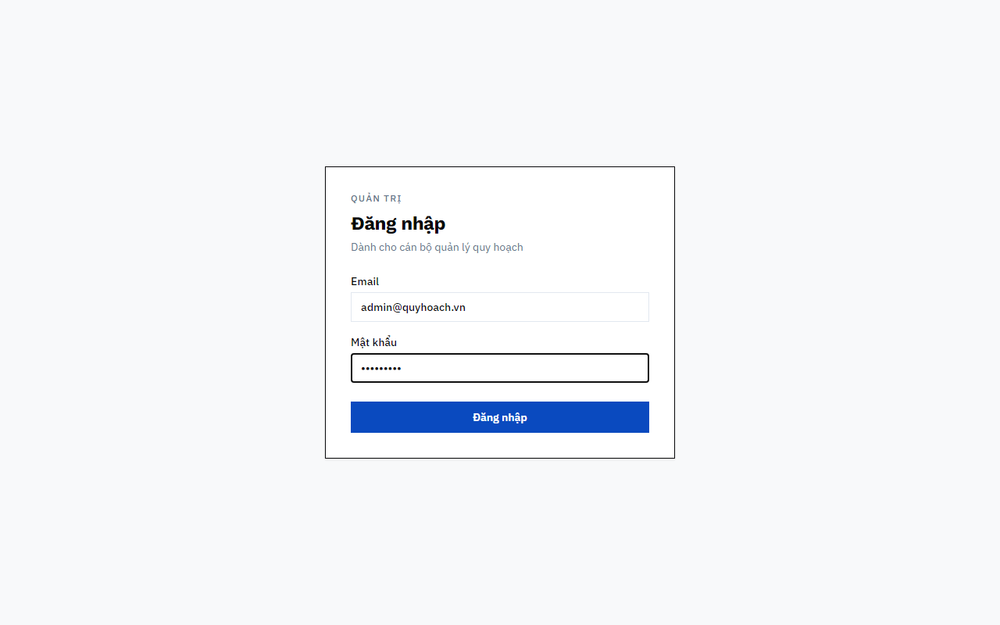
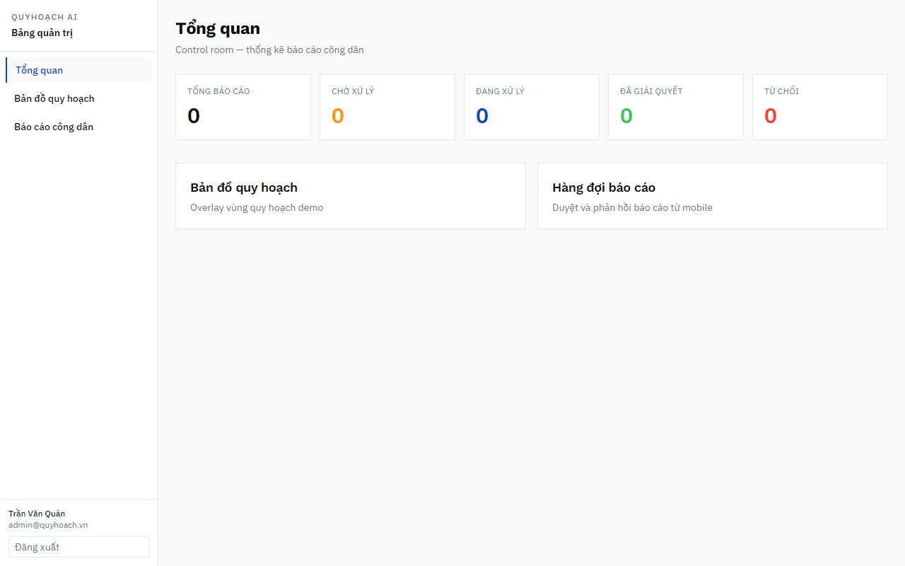
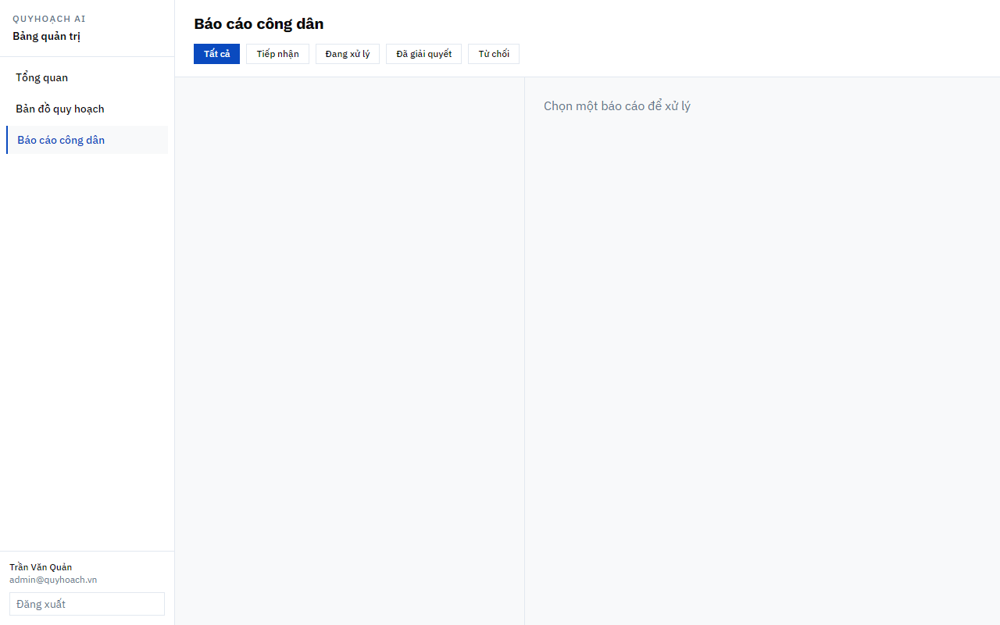
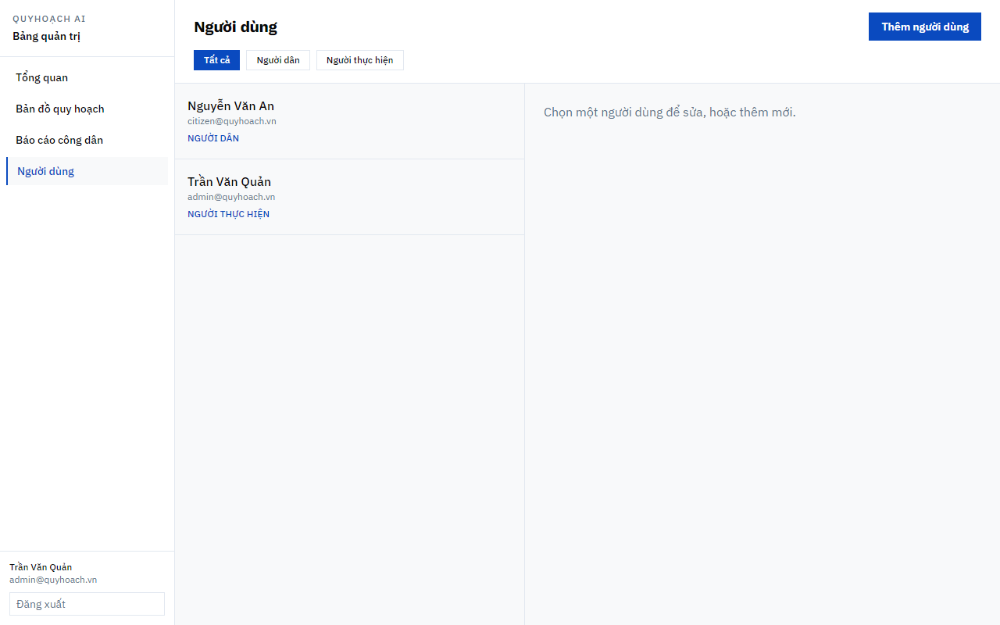

Màn hình ghi Dành cho cán bộ quản lý quy hoạch. Form sẵn email demo admin@quyhoach.vn và mật khẩu Admin@123.

Hình 1.1 — Đăng nhập web quản trị
Nhập email và mật khẩu tài khoản quản lý.
Nhấn đăng nhập.
Tài khoản admin → vào Tổng quan.
Tài khoản người dân bị từ chối: Tài khoản không có quyền quản trị web.
Không có màn đăng ký trên web. Đăng ký trên app chỉ tạo Người dân. Tài khoản manager / admin tạo tại mục Người dùng hoặc qua seed.
1.2. Tổng quan (Dashboard)
Tiêu đề trang: Tổng quan. Phụ đề: Control room — thống kê báo cáo công dân.

Hình 1.2 — Tổng quan
Thẻ số liệu
Ý nghĩa
Tổng báo cáo
Tất cả báo cáo công dân
Chờ xử lý
Trạng thái Tiếp nhận
Đang xử lý
Đã được cán bộ tiếp nhận
Đã giải quyết
Hoàn tất (app người dân hiện Đã duyệt)
Từ chối
Không chấp nhận
Hai liên kết nhanh trên trang: Bản đồ quy hoạch (overlay demo) và Hàng đợi báo cáo (duyệt và phản hồi báo cáo từ mobile). Bản đồ cũng có trên sidebar nhưng không thuộc hai quy trình chính của tài liệu này.
Góc dưới sidebar hiện tên, email và nút Đăng xuất.
Quy trình 2 — Báo cáo từ công dân trên web
Lọc, đọc và cập nhật trạng thái + phản hồi. Người dân nhận thông báo trên app.
Mục đích Xử lý phản ánh gửi từ mobile. Cùng API với Trung tâm Quản trị trên app.
flowchart TD
Menu["Sidebar: Báo cáo công dân"] --> Loc["Lọc Tất cả / Tiếp nhận / Đang xử lý / Đã giải quyết / Từ chối"]
Loc --> DanhSach["Danh sách báo cáo"]
DanhSach --> ChuaChon{"Đã chọn báo cáo?"}
ChuaChon -->|Không| Hint["Chọn một báo cáo để xử lý"]
ChuaChon -->|Có| Doc["Đọc mô tả, địa chỉ, ảnh"]
Doc --> Status["Chọn trạng thái"]
Status --> PhanHoi["Nhập Phản hồi cán bộ"]
PhanHoi --> CapNhat["Cập nhật"]
CapNhat --> Notif["Thông báo tới người dân"]
Vòng đời báo cáo từ công dân (nhãn web):
stateDiagram-v2
[*] --> received: Cong_dan_gui
received --> processing: Dang_xu_ly
processing --> resolved: Da_giai_quyet
processing --> rejected: Tu_choi
received --> resolved: Giai_quyet_truc_tiep
received --> rejected: Tu_choi_truc_tiep
2.1. Xử lý báo cáo

Hình 2.1 — Báo cáo công dân
Mở Báo cáo công dân (hoặc Hàng đợi báo cáo từ Tổng quan).
Lọc theo trạng thái: Tất cả · Tiếp nhận · Đang xử lý · Đã giải quyết · Từ chối.
Chọn báo cáo trong danh sách (tiêu đề, tên người gửi, trạng thái).
Đọc mô tả, địa chỉ, ảnh (nếu có).
Chọn trạng thái trên form, nhập Phản hồi cán bộ.
Nhấn Cập nhật.
Chưa chọn: Chọn một báo cáo để xử lý.
Mã
Nhãn web
Nhãn app người dân
received
Tiếp nhận
Tiếp nhận
processing
Đang xử lý
Đang xử lý
resolved
Đã giải quyết
Đã duyệt
rejected
Từ chối
Từ chối
Sau khi cập nhật, người dân nhận thông báo và thấy mục PHẢN HỒI TỪ QUẢN LÝ trên chi tiết báo cáo. Người thực hiện (manager) cũng có thể cập nhật cùng báo cáo trên app — hai kênh ghi đè cùng một bản ghi.
Quy trình 3 — Quản lý người dùng
Tạo, chỉnh sửa và xóa tài khoản người dân và người thực hiện trên web.
Mục đích Cấp phát tài khoản. Ba vai trò kỹ thuật: citizen (Người dân), manager (Người thực hiện — app), admin (Admin — web).
flowchart TD
Menu["Sidebar: Người dùng"] --> DanhSach["Danh sách người dùng"]
DanhSach --> Chon{"Thao tác?"}
Chon -->|Thêm người dùng| Tao["Điền form + mật khẩu → Tạo"]
Chon -->|Chọn người dùng| FormSua["Form sửa: Cập nhật hoặc Xóa"]
FormSua -->|Cập nhật| CapNhat["Lưu thông tin / mật khẩu"]
FormSua -->|Xóa| Xoa["Xác nhận hộp thoại → Xóa"]
Tao --> DanhSach
CapNhat --> DanhSach
Xoa --> DanhSach
3.1. Tạo, sửa, xóa người dùng

Hình 3.1 — Người dùng
Mở Người dùng trên sidebar.
Thêm người dùng: nhấn Thêm người dùng, điền họ tên, email, SĐT (tuỳ chọn), vai trò, mật khẩu (≥ 6 ký tự) → nhấn Tạo.
Sửa: chọn người dùng trong danh sách → form bên phải hiện nút Cập nhật (và Xóa nếu không phải tài khoản đang đăng nhập). Chỉnh thông tin; mật khẩu để trống nếu giữ nguyên → Cập nhật.
Xóa: sau khi đã chọn người dùng, nhấn Xóa trên form rồi xác nhận. Không hiện nút Xóa với tài khoản đang đăng nhập.
Chưa chọn: Chọn một người dùng để sửa, hoặc thêm mới.
Nhãn web
Mã vai trò
Ghi chú
Người dân
citizen
App công dân
Người thực hiện
manager
Trung tâm Quản trị trên app — không vào web Admin
Admin
admin
Chỉ web quản trị
Không thể xóa, đổi email hay hạ quyền tài khoản đang đăng nhập — tránh tự khóa khỏi hệ thống.